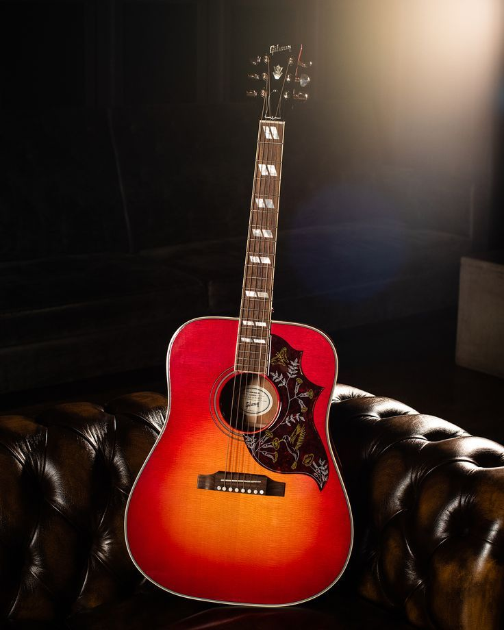

Mi pasión por las guitarras comenzó a los 11 años, cuando aprendí a tocar gracias a mi abuelo. Desde entonces, mi curiosidad y amor por este instrumento me llevaron a seguir aprendiendo de forma autodidacta, especialmente con tutoriales de YouTube. Creo firmemente que, si algo te apasiona, encontrarás tu propio camino para mejorar. No todo está en las clases: también se puede crecer con dedicación, constancia y mucho corazón.
Mis guitarras actuales
Epiphone Hummingbird (Electroacústica)
Una guitarra con un diseño clásico y cálido. Su cuerpo grande y resonante ofrece un sonido profundo ideal para baladas y folk. Las cuerdas brindan un tono cristalino y sus detalles hacen que tocarla sea un verdadero placer.
Les Paul Studio Black (Eléctrica)
Una máquina de poder. Esta guitarra combina un diseño sobrio con una pegada brutal. Perfecta para rock y blues, su sustain largo y sus pastillas humbucker le dan un carácter inconfundible.
Fender FA125CE (Electroacústica)
Ligera, elegante y muy cómoda para tocar. Ideal para sesiones en vivo, tiene una buena ecualización entre graves y agudos. Su forma cutaway permite llegar fácilmente a los trastes altos. Versátil y amigable.
Aria A554 Natural 1970s (Acústica)
Una joya vintage. Suena con una calidez y profundidad que solo los años pueden brindar. Madera noble, tacto suave y una historia en cada acorde. Una guitarra para disfrutar lentamente.
Guitarras que me encantaría tener
Estas guitarras me llaman mucho la atención por su sonido espectacular y su diseño que me fascina. Espero tenerlas pronto conmigo.
Gretsch G6120TG-DS
Por su diseño .
Gibson 1959 ES-355 Reissue EB VOS
Por su diseño.

Gibson J-45 Studio
Por su sonido.